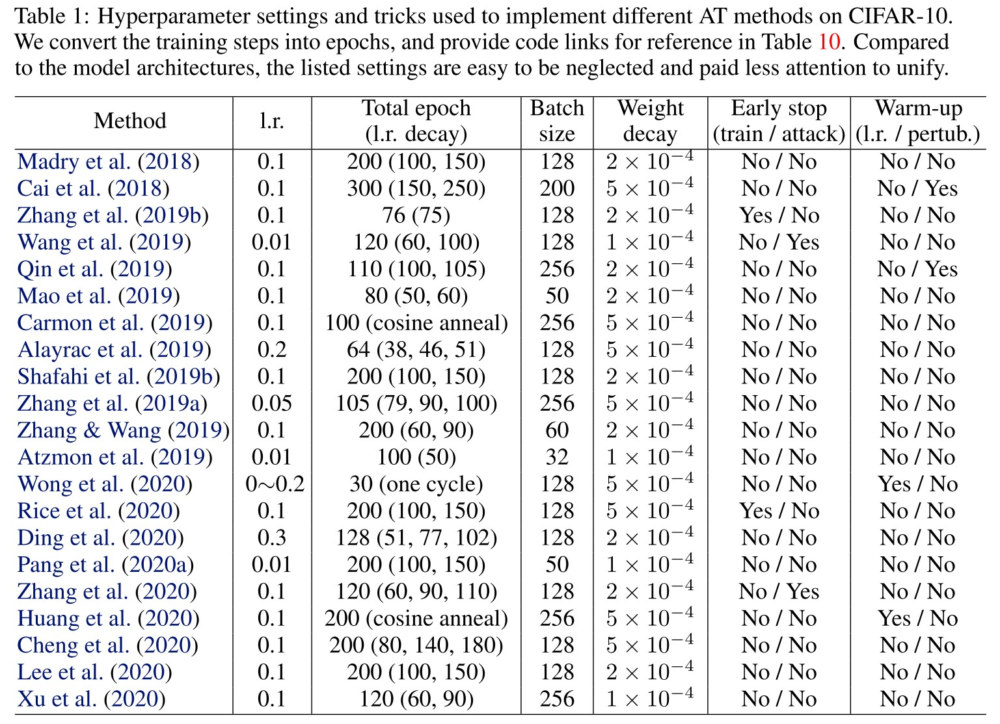
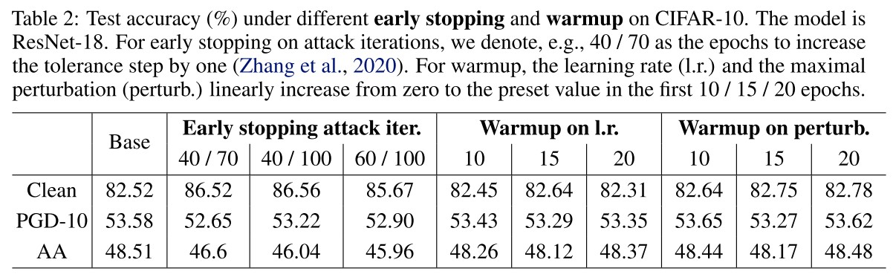
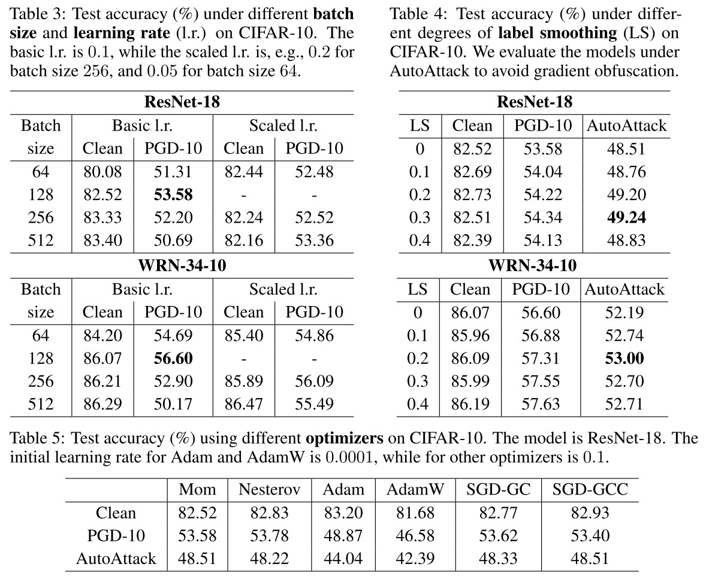
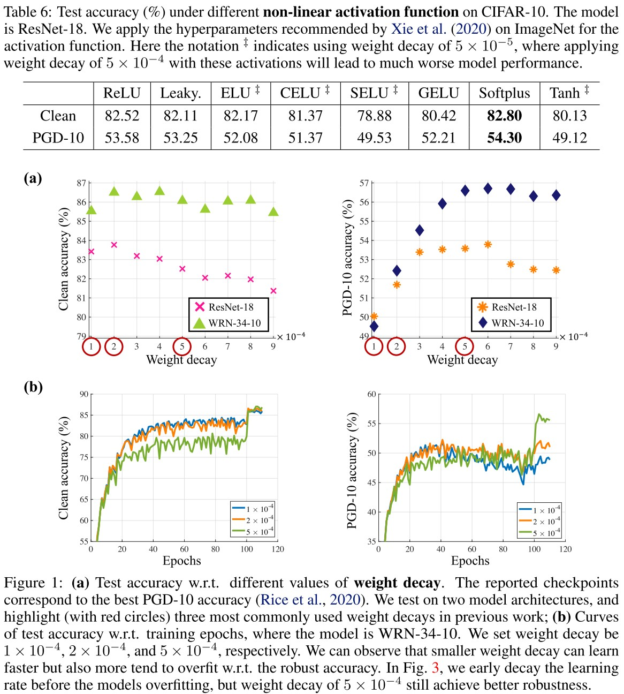
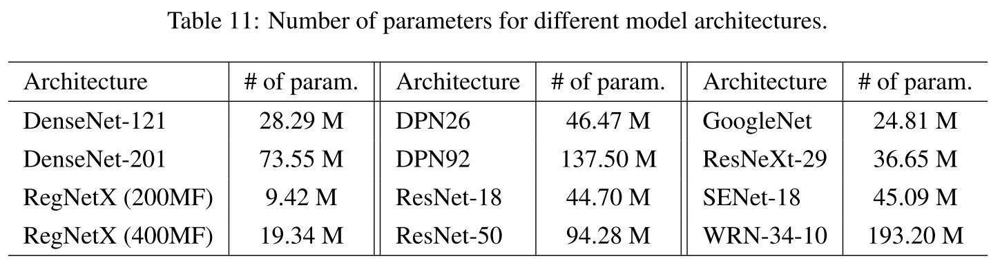
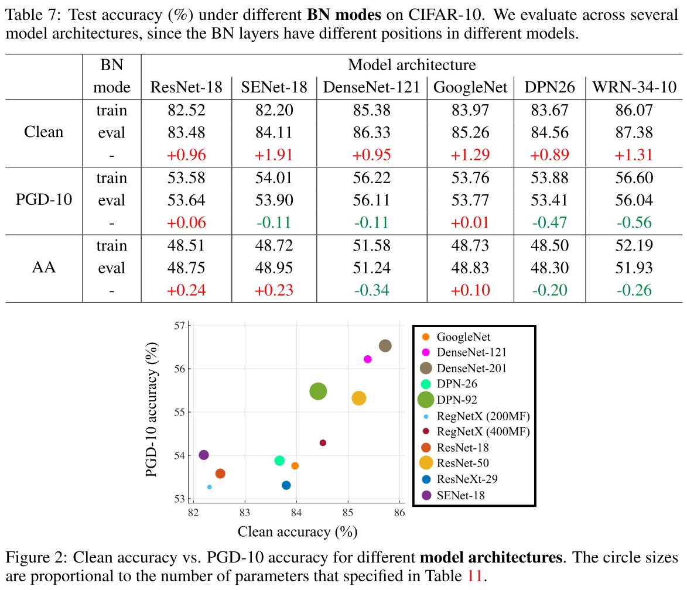
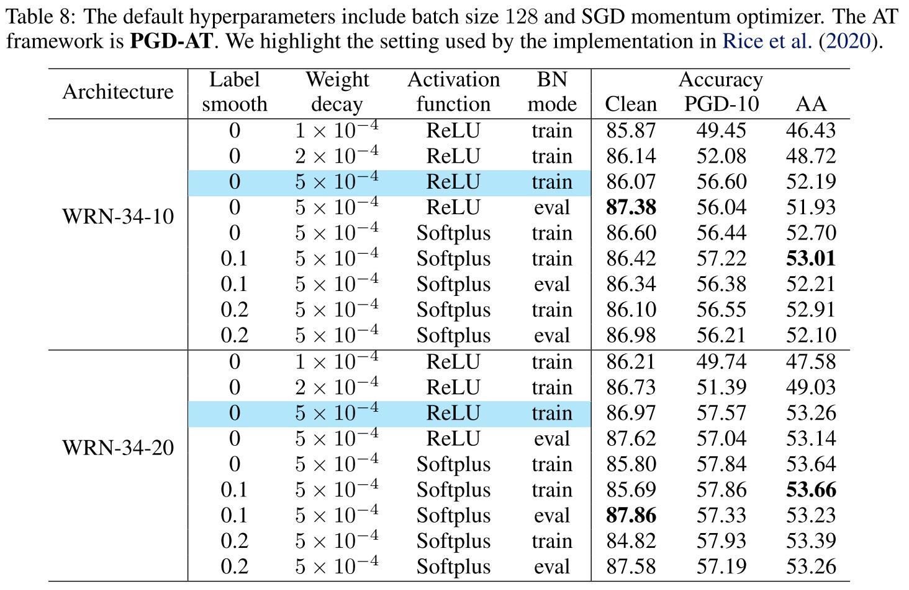
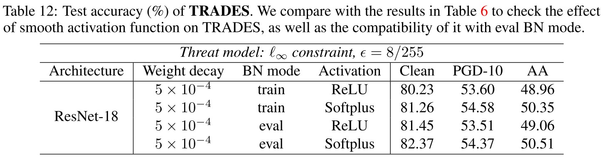
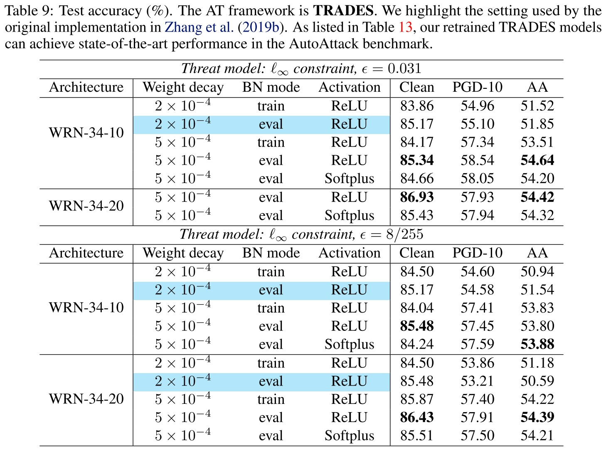
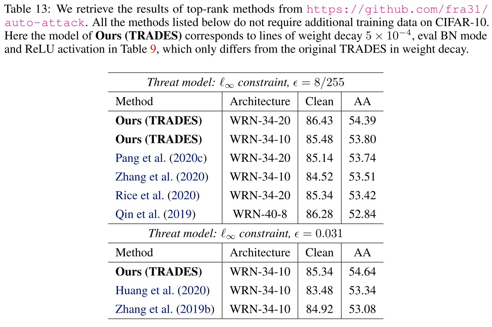

Bag of Tricks for Adversarial Training
By LI Haoyang 2020.11.21 | 2020.11.22
Content
Bag of Tricks for Adversarial TrainingContentBag of Tricks for Adversarial Training - 2020MotivationBag of tricksSettingsEarly stopping | WarmupBatch size | Label Smoothing | OptimizersWeight decay | Activation functionModel architecture | Batch normalization modeTakeawaysCombination of tricksRe-implementation of TRADESReference codesTrick candidates providedInspirations
Bag of Tricks for Adversarial Training - 2020
Code: https://github.com/P2333/Bag-of-Tricks-for-AT
Tianyu Pang, Xiao Yang, Yinpeng Dong, Hang Su, Jun Zhu. Bag of Tricks for Adversarial Training. arXiv preprint 2020. arXiv:2010.00467
They notice that the basic settings of the variants and improvements of the prevailing adversarial training are inconsistent, making a direct comparison unfair. Therefore, they make a comprehensive evaluations on the effects of basic settings in adversarial training.
A trivial but meaningful work.
Motivation
We find that TRADES uses weight decay of 2 × 10−4 and eval mode of batch normalization (BN) when crafting adversarial examples, while Rice et al. (2020) use weight decay of 5 × 10−4 and train mode of BN to generate adversarial examples.
Our empirical results suggest that improper training settings can largely degenerate the model performance, while this degeneration may be mistakenly ascribed to the methods themselves.

As shown in Table 1, the hyperparameter settings of proposed methods are quite different, making a direct comparison unfair.
Intuitively from the Table 1, in this domain, a large learning rate is favored, epochs and batch size vary a lot, weight decay is mostly either or , generally no early stop (because it's recently highlighted) and generally no warmup.
Although these settings are various, I do not think it's completely unfair to compare them, since setting itself is probably a part of method, the main meaning of restricting setting should be limiting the resources used to be comparable (e.g. in the same computational complexity).
Besides, there is another question, i.e. should we compare the best performance, or the fair performance? In practice, the best performance under limited resources is more meaningful, i.e. every engineer tunes the hyperparameters on their own dataset.
Bag of tricks
Settings
The basic evaluation setting they use are as follow
Dataset: CIFAR-10
Threat model: -perturbation with
Attack methods
- 10-steps PGD attack (PGD-10)
- AutoAttack (AA)
Default settings
Primary PGD-AT framework
Batch size: 128
Optimizer
- SGD with momentum
- Initial learning rate: 0.1
- Weight decay
Activation function: ReLU
w/o label smoothing
Train mode of batch normalization (in generation of adversarial example)
Epochs: 110 in total
- Learning rate decays by 0.1 at 100 and 105 epochs
Report
We report the results on the checkpoint with the best PGD-10 accuracy.
Early stopping | Warmup

Early stopping w.r.t. training epoch was first proposed in TRADES and further advocated in Robust Ovefitting, they adopt it as default for its effectiveness.
Early stopping w.r.t. attack iteration was first applied in the defense track in NIPS 2018 and later investigated for better trigger rules. As they evaluate in Table 2, this method increase the standard accuracy while remaining a comparable robust accuracy in PGD-10, but in AA, it's degraded.
Early stopping the attack iteration weakens the attack itself.
Warmup w.r.t. learning rate (gradually increase the learning rate or schedule the learning rate) is a general trick for deep learning models, and emphasized in the success of FastAT (Fast is better than free). They linearly increase the learning rate from zero to the preset value in the first 10/15/20 epochs, and find the improvements to be marginal as shown in Table 2.
It's unfair to make this claim, since they emphasize it to be crucial for fast adversarial training, while the adversarial training framework used here completely out resourced the FastAT. This comparison is unfair in computational complexity.
Warmup w.r.t. adversarial intensity refers to gradually increase the strength of adversary (e.g. the perturbation budget, the step size), it was proposed to monitor the overfitting in Curriculum adversarial training and proposed in Local Linearization. They linearly increase the maximal perturbation in the first 10/15/20 epochs, and find the effect to be limited as shown in Table 2.
Again, this claim is unfair for Local Linearization, as it is proposed in order to use a PGD attack with few steps in adversarial training.
Batch size | Label Smoothing | Optimizers

Batch size is found to be an important factor on large-scale datasets like ImageNet.
In the adversarial setting, Xie et al. (2019) use a batch size of 4096 to train a robust model on ImageNet, which achieves state-of-the-art performance under adversarial attacks.
A larger batch size shrinks the generalization gap, explodes the computational resource required and decreases the convergence speed.
On the CIFAR-10, the mini-batch sizes are usually chosen between 128 and 256. As shown in Table 3, they evaluate four batch sizes on two architectures (ResNet-18 and WRN-34-10). They also test the sacled learning rate according to the scale of batch size (i.e. increase the learning rate by if batch size is increased by ).
We can observe that the batch size of 128 works well on CIFAR-10, while the linear scaling rule can benefit the cases with other batch sizes.
Why not test on AA in this experiment?
Label smoothing (i.e. use a soft label) was proposed to mimic the AT procedure and further found to be useful to promote robustness of ensemble model. As shown in Figure 4, adequate label smoothing can improve accuracy under PGD-10 and AutoAttack without affecting the clean performance, but excessive label smoothing can degrade the robustness.
This improvement is quite marginal...
Optimizer.
Most of the AT methods apply SGD with momentum as the optimizer. The momentum factor is usually set to be 0.9 with zero dampening.
They test some optimizers as shown in Table 5.
We can find that SGD-based optimizers (e.g., Mom, Nesterov, SGD-GC / SGD-GCC) have similar performance, while Adam / AdamW performs worse for piecewise learning rate schedule.
Why use piecewise learning rate schedule in this experiment? Why the initial learning rate differs in this experiment?
Weight decay | Activation function

Weight decay. As shown in Table 1, most methods use either , or , among which, is a fairly widely used value for weight decay in deep learning and stems from the setting used by Madry et al. (2018).
In Figure 1(a), they plot the best performance acquired under each weight decay and in Figure 1 (b), they plot the training process under the three prevailing weight decay.
Note that smaller values of weight decay make the model learn faster in the initial phase, but the overfitting phenomenon also appears earlier.
The clean accuracy is less sensitive to the weight decay, while the robust accuracy is largely influenced by the weight decay.
A larger weight decay is better as their experiment.
Activation function. Most methods apply ReLU as the non-linear activation while Xie et al. (2020) empirically demonstrate that smooth activation functions improve robustness on ImageNet.
They empirically test several activation functions as shown in Table 6.
We confirm that smooth activation indeed benefits model robustness for ResNet-18.
Why it seems to me that the smoothness is not significant....
However, as shown in Table 8 (for PGD-AT) and Table 9 (for TRADES), this benefit is less significant on larger models like WRN. Thus we deduce that smaller model capacity can benefit more from the smoothness of activation function.
They also conclude that models trained on CIFAR-10 seem to prefer activation function with zero truncation since those with negative return values like ELU, LeakyReLU, Tanh have worse performance than ReLU as shown in Table 6.
Model architecture | Batch normalization mode


Model architecture.
Source: https://github.com/kuangliu/pytorch-cifar
For the adversarially trained models, it has been generally recognized that larger model capacity can usually lead to better robustness (Madry et al., 2018).
They test some hand-crafted model architectures with comparable number of parameters as shown in Figure 2.
We can observe that DenseNet can achieve both the best clean and robust accuracy, while being memory-efficient (but may require longer inference time).
This discovery is consistent with the discovery of When robustness meets NAS.
Interestingly, Wu et al. (2020) demonstrate that residual connections allow easier generation of highly transferable adversarial examples, while in our case this weakness for the standardly trained models may turn out to strengthen the adversarially trained models.
Batch normalization (BN mode).
When crafting adversarial examples in the training procedure, Zhang et al. (2019b) use eval mode for BN, while Rice et al. (2020) and Madry et al. (2018) use train mode for BN.
As seen, using eval mode for BN can increase clean accuracy, while keeping comparable robustness.
The eval mode of BN freezes the parameters while generating adversarial examples, but the train mode of BN updates the parameters.
As Xie et al. has discovered that the BN used for adversarial examples and clean examples is critical to obtain a well-performed adversarially trained model, this experiment is a confirmation.
Takeaways
Slightly different values of weight decay could largely affect the robustness of trained models.
Vary by 5%~7% in robust accuracy by PGD-10.
Moderate label smoothing and linear scaling rule on l.r. for different batch sizes are beneficial.
Vary by less than 1% in robust accuracy by AutoAttack.
Applying eval BN mode to craft training adversarial examples can avoid blurring the distribution.
Vary by less than 1% in robust accuracy by PGD-10 and AutoAttack.
Early stopping the adversarial steps or perturbation may degenerate worst-case robustness.
Vary by less than 1% in robust accuracy by PGD-10 and AutoAttack.
Smooth activation benefits more when the model capacity is not enough for adversarial training.
Vary by less than 2% in robust accuracy by PGD-10 among zero truncation functions; vary by 1%~5% in robust accuracy by PGD-10 between zero truncation functions and negative truncation functions.
Combination of tricks
Now we investigate combining the selected useful tricks, which involve label smoothing, weight decay, activation function and BN mode.

As demonstrated in Table 8, the improvements are not ideally additive by combining different tricks, while label smoothing and smooth activation function are helpful, but not significant, especially when we apply model architectures with a larger capacity.
While the robust accuracies under same weight decay of vary less than 1% generally by PGD-10 and AutoAttack, the clean performance have a few significant fluctuations under different combinations of tricks.
It appears to me that the BN mode is most significant among these tricks.
They also provide a baseline setting on CIFAR-10.
Baseline setting (CIFAR-10)
- Batch size 128
- Initial learning rate 0.1 (decay factor 10 at 100 and 105 epochs, totally 110 epochs)
- SGD momentum optimizer
- Weight decay
- Eval mode BN for generating adversarial examples
- Warmups are not necessary
- Label smoothing and smooth activation are optional
Re-implementation of TRADES



As shown in Table 9, they re-implement TRADES under different combinations of tricks.
We can observe that after simply changing the weight decay from 2 × 10−4 to 5 × 10−4, the clean accuracy of TRADES improves by ∼ 1% and the AA accuracy improves by ∼ 4%, which make the trained model surpass the previously state-of-theart models reported by the AutoAttack benchmark, as listed in Table 13.
This SOTA has been exceeded as shown in RobustBench. Among those using the same architecture, the best is now proposed by Uncovering the Limits of Adversarial Training against Norm-Bounded Adversarial Examples.
Reference codes
Madry et al. (2018)
Aleksander Madry, Aleksandar Makelov, Ludwig Schmidt, Dimitris Tsipras, and Adrian Vladu. Towards deep learning models resistant to adversarial attacks. In International Conference on Learning Representations (ICLR), 2018.
Cai et al. (2018)
Qi-Zhi Cai, Chang Liu, and Dawn Song. Curriculum adversarial training. In International Joint Conference on Artificial Intelligence (IJCAI), pp. 3740–3747, 2018.
www.github.com/sunblaze-ucb/curriculum-adversarial-training-CAT
Zhang et al. (2019b) (TRADES)
Hongyang Zhang, Yaodong Yu, Jiantao Jiao, Eric P Xing, Laurent El Ghaoui, and Michael I Jordan. Theoretically principled trade-off between robustness and accuracy. In International Conference on Machine Learning (ICML), 2019b.
Wang et al. (2019)
Yisen Wang, Xingjun Ma, James Bailey, Jinfeng Yi, Bowen Zhou, and Quanquan Gu. On the convergence and robustness of adversarial training. In International Conference on Machine Learning (ICML), pp. 6586–6595, 2019
Mao et al. (2019)
Chengzhi Mao, Ziyuan Zhong, Junfeng Yang, Carl Vondrick, and Baishakhi Ray. Metric learning for adversarial robustness. In Advances in Neural Information Processing Systems (NeurIPS), pp. 478–489, 2019.
www.github.com/columbia/Metric_Learning_Adversarial_Robustness
Carmon et al. (2019)
Yair Carmon, Aditi Raghunathan, Ludwig Schmidt, Percy Liang, and John C Duchi. Unlabeled data improves adversarial robustness. In Advances in Neural Information Processing Systems (NeurIPS), 2019.
Alayrac et al. (2019)
Jean-Baptiste Alayrac, Jonathan Uesato, Po-Sen Huang, Alhussein Fawzi, Robert Stanforth, and Pushmeet Kohli. Are labels required for improving adversarial robustness? In Advances in Neural Information Processing Systems (NeurIPS), pp. 12192–12202, 2019.
www.github.com/deepmind/deepmind-research/unsupervised_adversarial_training
Shafahi et al. (2019b)
Ali Shafahi, Mahyar Najibi, Amin Ghiasi, Zheng Xu, John Dickerson, Christoph Studer, Larry S Davis, Gavin Taylor, and Tom Goldstein. Adversarial training for free! In Advances in Neural Information Processing Systems (NeurIPS), 2019b.
Zhang et al. (2019a)
Dinghuai Zhang, Tianyuan Zhang, Yiping Lu, Zhanxing Zhu, and Bin Dong. You only propagate once: Accelerating adversarial training via maximal principle. In Advances in Neural Information Processing Systems (NeurIPS), 2019a.
Zhang &Wang (2019)
Haichao Zhang and Jianyu Wang. Defense against adversarial attacks using feature scatteringbased adversarial training. In Advances in Neural Information Processing Systems (NeurIPS), pp. 1829–1839, 2019.
Atzmon et al. (2019)
Matan Atzmon, Niv Haim, Lior Yariv, Ofer Israelov, Haggai Maron, and Yaron Lipman. Controlling neural level sets. In Advances in Neural Information Processing Systems (NeurIPS), pp. 2034–2043, 2019.
Wong et al. (2020)
Eric Wong, Leslie Rice, and J. Zico Kolter. Fast is better than free: Revisiting adversarial training. In International Conference on Learning Representations (ICLR), 2020.
Rice et al. (2020)
Leslie Rice, Eric Wong, and J Zico Kolter. Overfitting in adversarially robust deep learning. In International Conference on Machine Learning (ICML), 2020.
Ding et al. (2020)
Gavin Weiguang Ding, Yash Sharma, Kry Yik Chau Lui, and Ruitong Huang. Mma training: Direct input space margin maximization through adversarial training. In International Conference on Learning Representations (ICLR), 2020.
Pang et al. (2020a)
Tianyu Pang, Kun Xu, Yinpeng Dong, Chao Du, Ning Chen, and Jun Zhu. Rethinking softmax crossentropy loss for adversarial robustness. In International Conference on Learning Representations (ICLR), 2020a.
Zhang et al. (2020)
Jingfeng Zhang, Xilie Xu, Bo Han, Gang Niu, Lizhen Cui, Masashi Sugiyama, and Mohan Kankanhalli. Attacks which do not kill training make adversarial learning stronger. In International Conference on Machine Learning (ICML), 2020.
Huang et al. (2020)
Lang Huang, Chao Zhang, and Hongyang Zhang. Self-adaptive training: beyond empirical risk minimization. arXiv preprint arXiv:2002.10319, 2020.
Lee et al. (2020)
Saehyung Lee, Hyungyu Lee, and Sungroh Yoon. Adversarial vertex mixup: Toward better adversarially robust generalization. In IEEE Conference on Computer Vision and Pattern Recognition (CVPR), pp. 272–281, 2020.
Trick candidates provided
Directly copied from https://github.com/P2333/Bag-of-Tricks-for-AT
Importance rate: Critical
Useful
Insignificance
- Early stopping w.r.t. training epochs (
Critical). Early stopping w.r.t. training epochs was first introduced in the code of TRADES, and was later thoroughly studied by Rice et al., 2020. Due to its effectiveness, we regard this trick as a default choice.
- Early stopping w.r.t. attack intensity (
Useful). Early stopping w.r.t. attack iterations was studied by Wang et al. 2019 and Zhang et al. 2020. Here we exploit the strategy of the later one, where the authors show that this trick can promote clean accuracy. The relevant flags include
--earlystopPGDindicates whether apply this trick, while '--earlystopPGDepoch1' and '--earlystopPGDepoch2' separately indicate the epoch to increase the tolerence t by one, as detailed in Zhang et al. 2020. (Note that early stopping attack intensity may degrade worst-case robustness under strong attacks) - Warmup w.r.t. learning rate (
Insignificance). Warmup w.r.t. learning rate was found useful for FastAT, while Rice et al., 2020 found that piecewise decay schedule is more compatible with early stop w.r.t. training epochs. The relevant flags include
--warmup_lrindicates whether apply this trick, while--warmup_lr_epochindicates the end epoch of the gradually increase of learning rate. - Warmup w.r.t. epsilon (
--warmup_epsindicates whether apply this trick, while--warmup_eps_epochindicates the end epoch of the gradually increase of epsilon. - Batch size (
--batch-size. According to Goyal et al. 2017, we take bs=128 and lr=0.1 as a basis, and scale the lr when we use larger batch size, e.g., bs=256 and lr=0.2. - Label smoothing (
--labelsmoothindicates whether apply this trick, while--labelsmoothvalueindicates the degree of smoothing applied on the label vectors. When--labelsmoothvalue=0, there is no label smoothing applied. (Note that only moderate label smoothing (~0.2) is helpful, while exccessive label smoothing (>0.3) could be harmful, as observed in Jiang et al. 2020) - Optimizer (
--optimizer, which include common optimizers implemented by official Pytorch API and recently proposed gradient centralization trick by Yong et al. 2020. - Weight decay (
1e-4(e.g., Wang et al. 2019),2e-4(e.g., Madry et al. 2018), and5e-4(e.g., Rice et al., 2020). We find that slightly different values of weight decay could largely affect the robustness of the adversarially trained models. - Activation function (
ReLU, includingSoftplusandGELUcan promote the performance of adversarial training. The relevant flags are--activationto choose the activation, and--softplus_betato set the beta for Softplus. Other hyperparameters are used by default in the code. - BN mode (
Inspirations
Most of the tricks evaluated offer a range of difference in robust accuracy less than 1%, which is not significant.
I think there is no doubt that early stopping w.r.t. training epochs and weight decay are critical to adversarial training as well demonstrated by the experiments.
Their claim on warmup seems a little unfair, since it was not primarily proposed for adversarial training (actually for fast adversarial training), but other evaluations are relatively sound.
It's a little confusing why batch size is marked as insignificance and label smoothing is marked as useful. Although they provide an experiment that by increasing the learning rate proportionally the effects brought by batch size can be mitigated, the influence brought by batch size with scaled learning rate still appears to be comparable with that brought by label smoothing. Why mark differently?
Different optimizers from SGD family bring marginal differences, and it seems that those from Adam family perform worse, well, it's reasonable to mark this as insignificant.
I think the choice of activation functions is similar to that of optimizers, but a smooth one is better by a larger margin than that in the experiment for optimizers; it's fair to be mark this as useful.
The performance gap between eval mode BN and train mode BN used when generating adversarial examples also seems marginal to me, but theoretically it's quite reasonable to use an eval mode BN given the probably correct assumption that adversarial examples and clean examples should be treated as from different distributions.